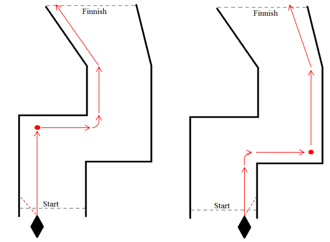
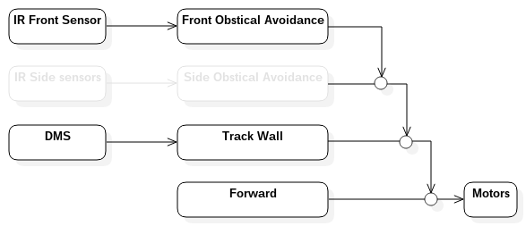
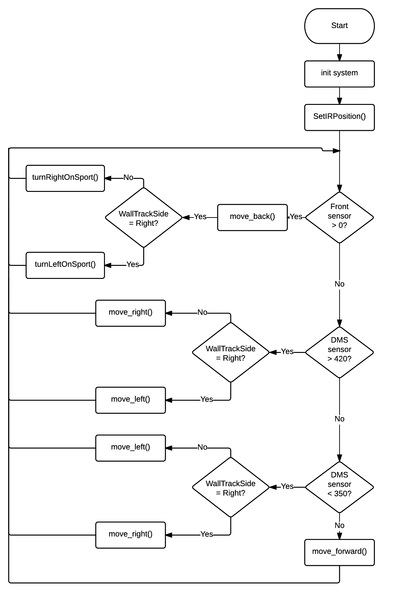
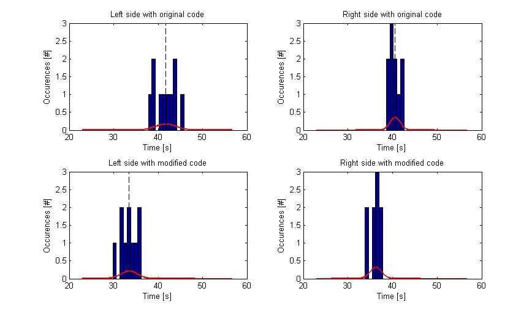

Responsible: Marc Matthiesen (s142949)
Group: CM3
Course: Modular Robotics (31384) in June 2015
Introduction
The following is a brief description of the development of the autonomous walking robot. The robot has been developed as third part of the course Modular Robotics (31384), at DTU.
The robot design is based on the two previous designs; The physical design is identical to the one presented for the remote controlled walking robot, and the controller firmware is based on the firmware developed for the autonomous vehicle
Unlike the developed vehicle, the walking robot has only been equipped with a single long Distance Measurement Sensor, DMS and a single InfraRed sensor, IR. Compared with the autonomous vehicle designed in task 1 4 fewer IR sensors has been used to solve the maze. The reason for this choice is the fact that all 'static' obstacles was removed form the maze during the walking robot competitions.
Control principle
The basic idea
The basic control idea of the robot is, like the autonomous vehicle, to create a 'wall tracking' robot. This means that the robot should follow which ever side wall is closest with a predetermined distance to the wall.
The principle is illustrated in figure 2 below:

Figure 2: Idea behind the controller
as illustrate above three functionalities is needed for the robot to perform as intended:
The first functionality is to identify whether the closest wall is located on the right or left side of the robot.
This has been solved by placing the DMS on a motor. When the robot is started it looks at the right wall, and determines whether it is close
enough to follow, if not it follow the left wall.
The function is described in detail during the description of the controller firmware
The second functionality needed is the actual wall tracking functionality. Here the robot will move closer to the wall if to far away and
further from the wall if to close.
This is done while the robot is moving forward.
The third and final functionality need is the 'turn on spot' functionality, illustrated by the red dots on the figure above.
The functionality is needed when the robot meets a sharp corner, turning to the opposite side a the wall tracking side.
During the 'turn on spot' functionality the robot will stop its forward movement and move back a bit before turning ~90 degrees around
its own center axis. The 'turn on spot functionality is triggered when the IR sensor placed in the front of the robot detect a obstacle
within approximately 10 cm.
The control firmware - structure
Since the beginning of the firmware development of tasks 1, the design has been focus on creating a firmware structure with a high reuseability,
for the different tasks (Task 1 -3).
This means that firmware has been constructed of 3 layers: first layer is the actual hardware interface drivers.
This is for instance the Dynamixel driver, ADC driver ETC.
The second layer is a abtraction layer where for instance functionality for moving forward or sideways is implemented.
The third layer is the actual controller, or "brain" of the robot, it is here sensor inputs are converted into actions.
Since the hardware is more or less the same for all tasks the layers of the firmware means that the controller from the autonomous
vehicle can be reused with very few changes, since for instance a function call to "move_forward()" is the same for both the vehicle
and the walking robot.
The only difference is the implementation of the function. The principle of the firmware structure is illustrated below:
Figure 3: Firmware structure
As seen on the figure above the primary changes the the firmware when going from the vehicle to the walking robot is made to the second layer.
The control firmware - Implementation principle
In general the controller has been implemented using a subsumption structure, as it is seen below. Since the controller has been based on the
controller designed for the vehicle the control principle is the same, however without using any side sensors, as the is no obstacle in
the maze:

Figure 4: Subsumption structure of the controller
The subsumptive structure means that each of the functions shown in the picture above has been implemented and optimized separately.
This means that first the move forward functions has been implemented and tested until the robot moved satisfactory,
afterwards the wall track functions has been implemented and tested, and finally the front obstacle avoidance.
The control firmware - The final controller
Below is a simplified flowchart of the controller firmware shown:

Figure 5: Flowchart showing the control principle
Here it is very clear that the subsumption structure has been used, since the front sensor has the highest priority, followed by the wall track
functionality using the DMS sensor and finally comes the move forward functionality.
Test results and optimization
Since the robot has been implemented using a subsumption structure, a lot of different tests and optimizations has ben made throughout the
whole implementation of the controller firmware.
One of the optimizations that was made was to optimize the movement speed of the robot. This was done by increasing the distance each leg travels while on the ground.
The distance was increased by ~13%, however meaning that each step would take approximately 13% longer. Even with the logger timer for each step
is was possible to decrease the averaged maze-completions time of the robot, as shown below:

Figure 6: Test results and optimization
By increasing the distance each leg travels while on the ground by 13% it was possible to optimize the average completion time, when tracking
the left wall, from 41.7s with a standard deviation of 2.3s to 33.5s with a standard deviation of 1.8s. likewise when tracking the right will
is was possible to optimize the average completion time from 40.6s with a standard deviation of 1 s to 36.3s with a standard deviation of 1.3s.